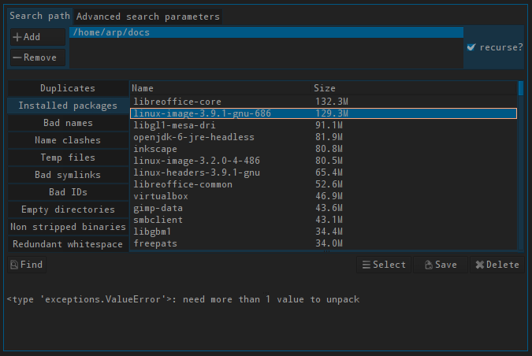

lang fr|gb

verifier et nettoyer avec fslint
FSlint est un utilitaire complet, permettant de nettoyer vos fichiers, éliminer les doublons, vérifier l'encodage, afficher les paquets installés... l'interface graphique est écrite en pyGTK.
fslint est présent dans la section applications:outils du menu livarp.
fonctionnalités
- Déduplication : détection des doublons sur la base de leur taille et de leur somme de contrôle MD5 et SHA1. Une fois les doublons détectés il est possible de les supprimer ou de les fusionner via un lien en dur.
- Paquets installés: Donne la liste des paquets installés sur le système.
- Nettoyage : Permet de supprimer les fichiers temporaires.
- Lien morts : Permet de détecter et supprimer si voulu les liens morts.
- Correction des extensions : Détecter et corriger les extensions qui ne correspondent pas au type réel.
- Nommer les conflits: Liste les programmes ayant un nom identique mais un chemin différent.
- Suppression des dossiers vides.
- Correction des noms avec plusieurs espaces de suite.
- Renommage des fichiers utilisant des caractères incorrects (lettres non permises pour le nommages de fichiers comme /!*@~[]…)
- Suppression de paquets (à éviter : préférer apt ou synaptic en graphique)
utilisation
Par défaut la recherche est effectuée dans le home. Les chemins dossiers à analyser peuvent être modifiés via les boutons « Ajouter » et « Enlever ». en haut à hauche de la fenêtre.
L'onglet « paramètres avancés de recherche » permet de spécifier des répertoires à exclure ou des options complémentaires pour la recherche (via des paramètres de la commande find).